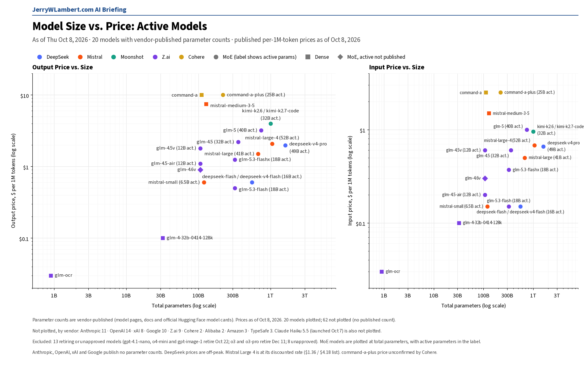
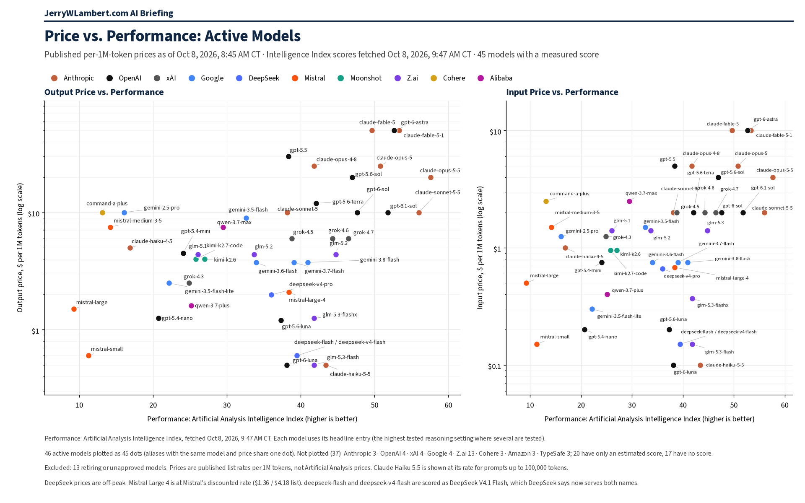

Daily Model Brief, October 8, 2026
Anthropic launches Claude Haiku 5.5 at a tenth of Haiku 4.5's price and halves the cost of Sonnet 5.5 cache hits.
Download PDFExecutive Summary
Anthropic launched Claude Haiku 5.5 (claude-haiku-5-5) on October 7, priced by prompt length: $0.10 per million input tokens and $0.50 output for prompts up to 100,000 tokens, and $0.50 / $2.50 for the whole request when the prompt is longer. Cache hits are $0.01 ($0.05 on long prompts). It has a 1M-token context window and 128K max output.
That is a tenth of Haiku 4.5's $1.00 / $5.00, and Haiku 5.5 scores 43.4 on the Artificial Analysis Intelligence Index at its highest setting, the top score of any model in this brief's chart at $0.50 or less per million output tokens. Anthropic warns that code written for Haiku 4.5 can break on Haiku 5.5.
Anthropic also cut cache hits on Claude Sonnet 5.5 (claude-sonnet-5-5) from $0.20 to $0.10 per million tokens, 0.05x the input price. Input ($2.00), cache writes ($2.50) and output ($10.00) are unchanged.
Haiku 4.5 (claude-haiku-4-5-20251001) remains active, with retirement not sooner than October 15, 2026 and no date set. Mistral Large 4 stays on sale at $0.68 input and $2.09 output with no end date, and Anthropic's Mythos 5 and 5.1 remain limited access.
No other vendor changed a published token price since yesterday's brief.
What This Means for Customers
- If you run high-volume, short-prompt work on Haiku 4.5, test Haiku 5.5 now. It lists at a tenth of the price for prompts up to 100,000 tokens, but Anthropic says its newer tokenizer turns the same text into about 30% more tokens, so expect a real saving closer to 87% than 90%.
- Watch the 100,000-token line. A prompt one token over it reprices the whole request at $0.50 / $2.50, still half of Haiku 4.5, but five times the short-prompt rate.
- Check your code before you switch. Haiku 5.5 supports only adaptive thinking: a manual thinking budget returns an error, and responses can begin with thinking blocks by default.
- If you cache heavily on Sonnet 5.5, re-cost cached reads at $0.10 per million tokens. Nothing else on Sonnet 5.5 moved.
- Haiku 4.5 is not retiring before October 15 and Anthropic has not set a date. With Haiku 5.5 out, plan for a notice and keep a tested fallback ready.
- The October 22 deadline holds.
gpt-4.1-nano,o4-miniandgpt-image-1(OpenAI) shut down that evening (CT), and Google'sgemini-omni-flash-previewand Veo 3.1 previews shut down the same day.
New Models and Price Changes
Prices in USD per 1M tokens.
| Vendor | Model ID | Status | Input | Cached | Output |
|---|---|---|---|---|---|
| Anthropic | claude-haiku-5-5 | New Oct 7. Available now. Prompts up to 100,000 tokens. | $0.10 | $0.01 | $0.50 |
| Anthropic | claude-haiku-5-5 | Prompts over 100,000 tokens (whole request). | $0.50 | $0.05 | $2.50 |
| Anthropic | claude-sonnet-5-5 | Cache-hit price cut Oct 7 (was $0.20). Other rates unchanged. | $2.00 | $0.10 (was $0.20) | $10.00 |
| Mistral | mistral-large-4 | Public Preview. Sale price unchanged, no end date. | $0.68 (list $1.36) | $0.07 (list $0.14) | $2.09 (list $4.18) |
- Haiku 5.5 cache writes are $0.125 per million tokens for a 5-minute cache and $0.20 for a 1-hour cache on prompts up to 100,000 tokens ($0.625 and $1.00 above that). It is also offered on Amazon Bedrock, Google Cloud and Microsoft Foundry, and Anthropic says it will not retire before October 7, 2027.
- OpenAI, Google, xAI, DeepSeek, Moonshot, Z.ai, MiniMax, Mistral, Perplexity, Meta and TypeSafe published token prices were unchanged since yesterday's brief.
- Alibaba's price page could not be checked for a second day, and Amazon, Microsoft and ByteDance did not publish readable price tables. Their last confirmed prices stand.
Deprecations and Retirements
| Vendor | Model ID | Shutdown (CT) | Replacement | Note |
|---|---|---|---|---|
| OpenAI | gpt-4.1-nano o4-mini gpt-image-1 | Thu Oct 22, 2026, 7:00 PM CT | gpt-5.6-luna gpt-5.6-terra gpt-image-2.5-sunburst or gpt-image-2.5-flare | Unchanged. OpenAI lists Oct 23 with no time; 7:00 PM CT Oct 22 is 00:00 UTC Oct 23. |
| gemini-omni-flash-preview | Thu Oct 22, 2026 (time not stated) | gemini-omni-1.1-flash | Unchanged. | |
| veo-3.1-generate-preview veo-3.1-fast-generate-preview veo-3.1-lite-generate-preview | Thu Oct 22, 2026 (time not stated) | gemini-omni-1.1-flash | Unchanged. | |
| gemini-3.1-flash-image | No shutdown date announced | gemini-nano-banana-2.1 | Unchanged since Google withdrew its Oct 29 date yesterday. | |
| gemini-3.1-flash-tts-preview gemini-2.5-flash-preview-tts gemini-2.5-pro-preview-tts | Tue Nov 17, 2026 (time not stated) | gemini-3.8-flash-tts or gemini-3.8-flash-lite-tts | Unchanged. | |
| gemini-3.1-flash-live-preview gemini-2.5-flash-native-audio-preview-12-2025 | Tue Nov 17, 2026 (time not stated) | gemini-3.8-live | Unchanged. | |
| Anthropic | claude-sonnet-4-5-20250929 | Mon Nov 30, 2026 (time not stated) | claude-sonnet-5-5 | Unchanged. |
| Anthropic | claude-haiku-4-5-20251001 | Not sooner than Thu Oct 15, 2026; no date set | None named | Watch item. Still active; Haiku 5.5 launched Oct 7. |
| Cohere | command-r command-r-plus | Deprecated Sep 15, 2025; no shutdown date set | command-r-08-2024 command-r-plus-08-2024 command-a-03-2025 | Closed to new customers; existing users keep access until retirement. |
- Unverified: Google's deprecations page still shows gemini-2.5-flash-image shutting down Mon Mar 15, 2027, with gemini-3.1-flash-lite-image as the replacement, while Google's pricing page says it shut down Oct 2, 2026. Confirm with Google before you budget either date.
- Perplexity will retire its Agent API and Router API routes to older OpenAI models (openai/gpt-5.4, gpt-5.4-mini, gpt-5.4-nano, gpt-5.2, gpt-5.1, gpt-5 and gpt-5-mini) at 7:00 PM CT on Fri Oct 23, 2026, as announced on October 6.
Around the Market
Anthropic made the only moves since yesterday's brief, and both lower costs. Haiku 5.5 brings prompt-length pricing to Anthropic's fastest model: short prompts get the low rate, and a prompt past 100,000 tokens reprices the whole request. The Sonnet 5.5 cut is narrower but useful for cache-heavy agents and chat apps, where cached reads can be most of the input bill. Everywhere else, published rates held. OpenAI's and Google's pricing, model and deprecation pages were unchanged, Mistral kept Large 4 on sale for a third day with no end date, and Perplexity's Decisions API stayed at yesterday's $0.02 input. xAI, DeepSeek, Moonshot, Z.ai, MiniMax, Meta and TypeSafe left published rates alone.
Bottom Line
Haiku 5.5 resets the price of a fast Claude model to $0.10 / $0.50 for prompts up to 100,000 tokens. Test it against Haiku 4.5 now, mind the tokenizer and the long-prompt line when you re-cost, take the Sonnet 5.5 cache-hit cut if you cache, and keep October 22 as the hard date for the OpenAI and Google preview retirements.
Model Size vs. Price

Across the 20 active models whose vendors publish parameter counts, price rises only loosely with total size (rank correlation 0.39 on output price). Anthropic publishes no parameter counts, so Claude Haiku 5.5 is not plotted. Prices as of October 8, 2026.
Price vs. Performance

Across the 46 active models with a measured Artificial Analysis Intelligence Index score (fetched Oct 8, 2026, 9:47 AM CT), price rises with performance only loosely (rank correlation 0.43 on output price). New Claude Haiku 5.5 scores 43.4 at $0.50 per 1M output tokens, ahead of GLM-5.3-Flash (41.8), DeepSeek V4.1 Flash (39.5) and GPT-6 Luna (38.1) at $0.60 or less, while the top scorer, Claude Opus 5.5 at 57.6, costs $20.
All times Central. Prices, dates and model IDs are taken from first-party vendor pricing, model, deprecation and release-note pages as of 8:45 AM CT on October 8, 2026; chart prices are as of October 8, 2026. Performance scores are from the Artificial Analysis Intelligence Index. Items that could not be confirmed are marked unverified.